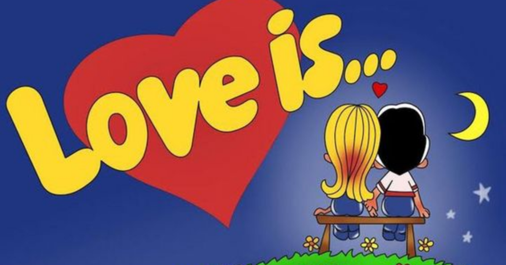

- Любов — це коли ти не можеш заснути без його смс
- Любов — це разом поставити вашу фотографію в рамку
- Любов — це залишити повідомлення на його вітровому склі
- Любов — це коли влаштовують для тебе романтичну вечерю
- Любов — це казати їй, що вона найгарніша у світі
Можна навести ось такі приклади назв для жувальних гумок:
- Банан та полуниця (блакитна обгортка з білими краями)
- Ананас та апельсин(помаранчева обгортка з жовтими краями)
- Вишня та лимон (малинова або чорна обгортка з жовтими краями)
- Яблуко та лимон (салатова обгортка з жовтими краями)
- Кокос та ананас (жовта обгортка з салатовим краями)
- Черешня та лимон (чорна обгортка з жовтими краями)
- та ін.
Історія створення Love is... носить в собі історію кохання Нижче
Ну а тепер — про жуйку, завдяки якій більшість із нас і познайомилася з милими коміксами про любов.
- У 1990-х роках турецький завод Dandy Sakiz почав випускати жувальні гумки під назвою Love is
- У них поєднуються два смаки
- а кожен жувальний кубик загорнутий у кольоровий вкладиш
- в них були ті самі комікси, які придумала Кім і малював Білл.
- Цукрова жувальна гумка швидко стала популярною і твердо посіла позиції на ринках пострадянського простору, зокрема і в Україні.
- Використовувати комікси про кохання в Туреччині вирішили без повідомлення правовласників, і довгий час ані Білл, ані Кім, ані її сини не знали, що їхню ідею просто вкрали
- Про це дізнався ілюстратор коміксів Білл Еспрі тільки в 2008 році, коли йому зателефонував кореспондент журналу “Велике місто”, щоб узяти інтерв’ю про вкладиші для турецької жуйки.